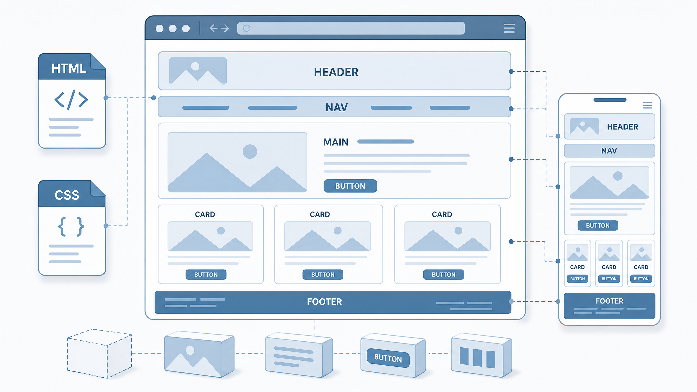
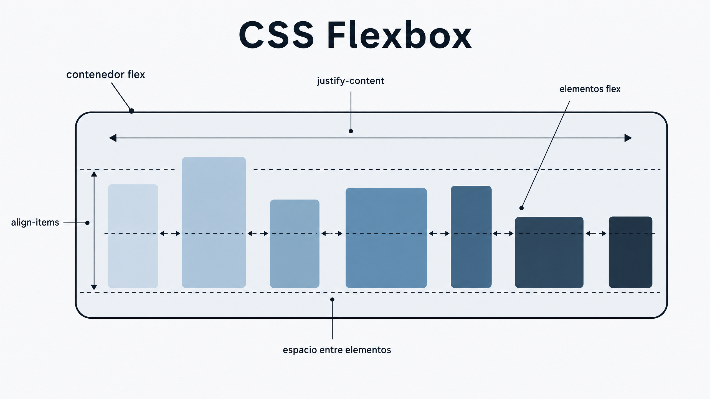
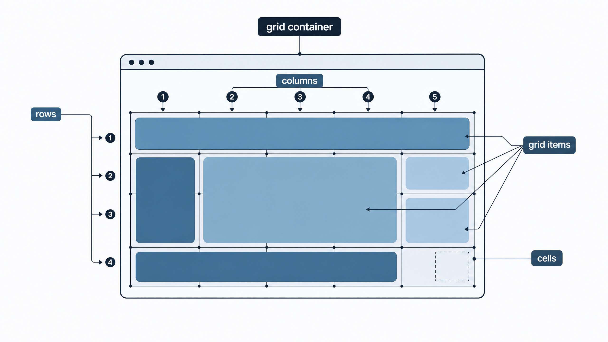

La maquetación web consiste en organizar y distribuir los elementos de una página, como textos, imágenes, menús y botones, para crear una estructura clara y fácil de usar.
HTML define la estructura y el contenido de la página. Por ejemplo, indica qué elementos son títulos, párrafos o enlaces. CSS controla su presentación y distribución: colores, tamaños, márgenes, espacios, alineación y posición.
Gracias a CSS, los elementos pueden colocarse en filas, columnas o zonas concretas de la página. Algunas técnicas habituales son:

Flexbox (CSS Flexible Box Layout) es un sistema de maquetación que permite organizar fácilmente los elementos dentro de un contenedor. Resuelve problemas habituales de diseño, como alinear elementos, distribuir el espacio disponible o crear estructuras que se adapten a distintos tamaños de pantalla. El elemento que utiliza display: flex se convierte en un flex container o contenedor flexible. Sus elementos hijos pasan a ser flex items y pueden organizarse en una fila o en una columna.
Flexbox es especialmente útil para crear diseños adaptables, organizar menús, tarjetas, botones o cualquier grupo de elementos sin utilizar posiciones complicadas.

CSS Grid es un sistema de maquetación que permite organizar los elementos de una página web en filas y columnas. Es útil para crear estructuras ordenadas, como galerías, menús, tarjetas o diseños completos.
Facilita la distribución y alineación de los elementos sin depender de muchos márgenes, posiciones o elementos flotantes. Grid permite controlar de forma sencilla el espacio y la posición de cada elemento.
El elemento principal es el grid container, el contenedor que utiliza display: grid. Sus elementos hijos se convierten en grid items, que pueden colocarse dentro de la cuadrícula.
Propiedades importantes:
Flexbox está pensado principalmente para organizar elementos en una dimensión: una fila o una columna. Grid trabaja especialmente en dos dimensiones, controlando filas y columnas al mismo tiempo. Además, permite crear diseños responsive que se adaptan a distintos tamaños de pantalla.